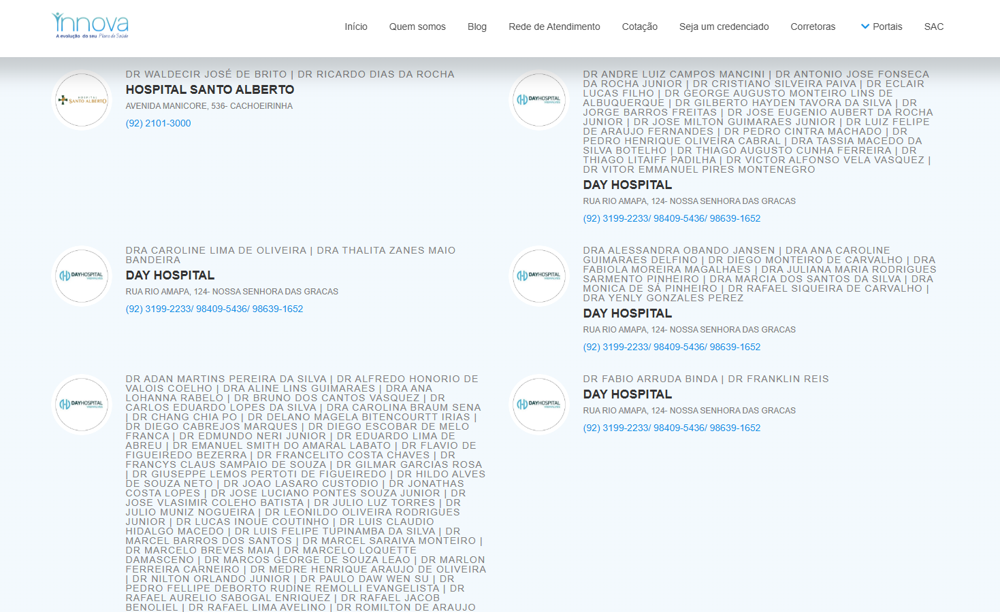
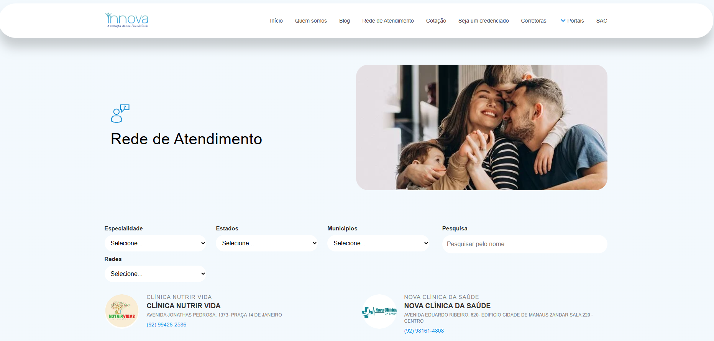
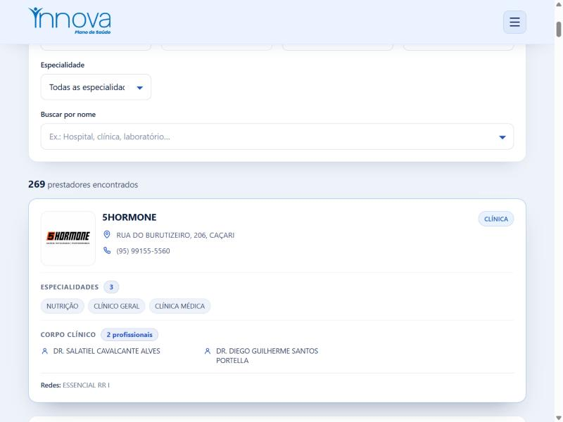
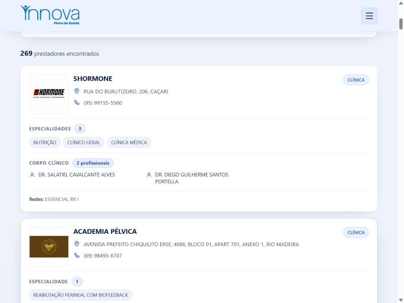

Caso de estudo · Innova
O redesenho da Rede de Atendimento transformou uma lista crua e interminável do site antigo em uma busca com filtros e cards limpos — hoje uma das páginas mais acessadas da Innova, com forte tráfego orgânico vindo do Google.
O problema — antes
No site antigo, encontrar um credenciado era um teste de paciência: filtros crus que pouco ajudavam e uma listagem poluída, com paredões de nomes de médicos amontoados e a mesma instituição repetida em vários blocos.

Antes — dezenas de nomes por bloco, “DAY HOSPITAL” repetido no mesmo endereço

Antes — o topo da página antiga
A solução — depois
A nova Rede de Atendimento combina cinco filtros com uma busca por nome e agrupa os resultados por instituição — cada prestador em um card limpo, com tipo, endereço, contato, especialidades e os planos aceitos.

Depois — filtros claros, contador de resultados e cards organizados
Antes × Depois

Melhorias
Estado, município, rede/plano, tipo de recurso e especialidade — juntos, com busca por nome e contador de resultados.
Prestadores do mesmo local/tipo viram um único card — fim da instituição repetida.
As especialidades e o corpo clínico ficam legíveis, sem paredões de nomes.
Cada endereço abre direto no Google Maps; telefones prontos para ligar.
Layout responsivo — a maior parte do acesso vem do celular, via busca no Google.
Os dados vêm do Supabase e são geridos no admin (Dashboard de Redes), sempre atualizados.
Benefícios para o usuário
Resultados
A Rede de Atendimento virou porta de entrada: boa parte do tráfego chega pela busca orgânica no Google, não só de quem já é cliente.